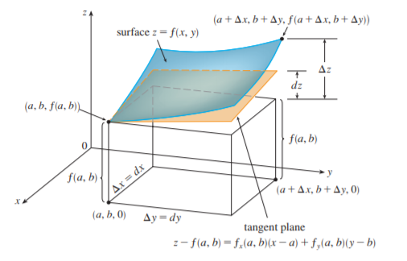

2. total derivatives
$\global\def\d{\mathrm{d}} $ $\global\def\p{\partial} $ $\global\def\g{\operatorname{grad}}$
1. 全微分
(1). 定义
定义: 若全增量 $\Delta z=f(x_0+\Delta x,y_0+\Delta y)-f(x_0,y_0)$ 可表示为 $\Delta z=A\Delta x+B\Delta y+o(\rho)$，其中 $A、B$ 为常数，$\rho=\sqrt{(\Delta x)^2+(\Delta y)^2}$，则称 $z$ 在 $(x_0,y_0)$ 处可微，并称 $A\Delta x+B\Delta y$ 为 $z$ 在该点处的全微分，记为 $\mathrm{d}z=A\mathrm{d}x+B\mathrm{d}y$
定理: 可微 $\Longrightarrow$ 连续
- 若 $\Delta z=A\Delta x + B\Delta y+o(\rho)$ 且 $\Delta x\to 0,\Delta y\to 0$，则 $\Delta z\to 0$，即连续
定理: $z$ 可微 $\Longrightarrow$ 两个偏导数都存在，且 $\displaystyle \d z\Big|_{\substack{x=x_0 \\ y=y_0}}=f'_x(x_0,y_0)\ \d x+f'_y(x_0,y_0)\ \d y$
- $\Delta z=A\Delta x+B\Delta y+o(\sqrt{(\Delta x)^2+(\Delta y)^2})$，取 $\Delta y=0$，则有:
$\displaystyle f(x_0+\Delta x, y_0)-f(x_0,y_0)=A\Delta x+o(|\Delta x|)\Longrightarrow A=\frac{f(x_0+\Delta x,y_0)-f(x_0,y_0)}{\Delta x}-\frac{o(\Delta x)}{\Delta x}$
取极限后有 $A=f'_x(x_0,y_0)$
定理: $z$ 在 $(x_0,y_0)$ 处的偏导 $f'_x(x_0,y_0)$、$f'_y(x_0,y_0)$ 存在且连续 $\Longrightarrow$ $z$ 在 $(x_0,y_0)$ 可微
- 几何直观上，可微则在某点处光滑，并存在切平面；可偏导仅是两个方向上光滑，因此不同于一元函数，可导未必可微
- 增强可导的条件，使之连续，可以推出可微 (过程暂略)
(2). 几何意义

$\Delta z$、$A\Delta x$、$B\Delta y$、$o(\rho)$ 均如图所示。
$z-f(a,b)=f'_x(a,b)(x-a)+f' _ y(a,b)(y-b)$ 是经过切线 $
\displaystyle
\begin{cases}
x=a \\
z=f(x,y)
\end{cases}
$ 和
$
\displaystyle
\begin{cases}
y=b \\
z=f(x,y)
\end{cases}
$ 且在 $(a,b,f(a,b))$ 处的切平面
2. 多元复合函数
(1). chain rule
定理: 设 $z=f(u,v)$ 可微，$u=\phi(x,y),v=\psi(x,y)$ 偏导存在，则 $z$ 关于 $x、y$ 的偏导存在，且
$\displaystyle \frac{\p z}{\p x}=\frac{\p z}{\p u}\cdot\frac{\p u}{\p x}+\frac{\p z}{\p v}\cdot\frac{\p v}{\p x},\qquad \frac{\p z}{\p y}=\frac{\p z}{\p u}\cdot\frac{\p u}{\p y}+\frac{\p z}{\p v}\cdot\frac{\p v}{\p y}$
- $\displaystyle \frac{\p z}{\p x}=\lim_{\Delta x\to 0}\frac{f(u+\Delta u_x, v+\Delta v_x)-f(u,v)}{\Delta x}=\lim_{\Delta x\to 0}\frac{f'_u(u,v)\Delta u_x+f'_v(u,v)\Delta v_x+o(\rho)}{\Delta x}$
$\displaystyle 0\leq\Bigg|\frac{o(\rho)}{\Delta x}\Bigg|=\Bigg|\frac{o(\rho)}{\rho}\cdot\frac{\sqrt{(\Delta u_x)^2+(\Delta v_x)^2}}{\Delta x}\Bigg|,\qquad \lim_{\Delta x\to 0}\frac{o(\rho)}{\Delta x}=0\cdot C=0$
(2). 全微分
定理: (全微分形式不变性) 设 $z=f(u,v), u=\phi(x,y), v=\psi(x,y)$ 均可微，则不论将 $z$ 看成 $(u,v)$ 的函数还是 $(x,y)$ 的函数，其微分形式不变，即:
$\displaystyle \d z=\frac{\p z}{\p u}\d u+\frac{\p z}{\p v}\d v=\frac{\p z}{\p x}\d x+\frac{\p z}{\p y}\d y$
本质上还是链式法则
3. 隐函数存在定理
(1). 基本形式
定理: 设 $F(x,y)$ 在 $(x_0,y_0)$ 的邻域内满足：
① $F(x_0,y_0)=0$ ② $F'_x(x,y),F'_y(x,y)$ 连续 ③ $F'_y(x_0,y_0)\ne 0$
则方程 $F(x,y)=0$ 在 $(x_0,y_0)$ 邻域内能唯一确定 $y=f(x)$，且此函数连续可导，有
$\displaystyle \frac{\d y}{\d x}=-\frac{F'_x(x,y)}{F'_y(x,y)}$
- 存在性的证明比较复杂；确定单值函数 $y=f(x)$ 后，通过链式法则对 $F(x,f(x))=0$ 两端同时求导即可得到最终结果
推广:
定理: 设 $F(x,y,z)$ 在 $(x_0,y_0,z_0)$ 的邻域内满足：
① $F(x_0,y_0,z_0)=0$ ② $F'_x(x,y,z),F'_y(x,y,z),F'_z(x,y,z)$ 连续 ③ $F'_z(x_0,y_0,z_0)\ne 0$
则方程 $F(x,y,z)=0$ 在 $(x_0,y_0,z_0)$ 邻域内能唯一确定 $z=f(x,y)$，且此函数连续可导，有
$\displaystyle \frac{\p z}{\p x}=-\frac{F'_x}{F'_z},\qquad \frac{\p z}{\p y}=-\frac{F'_y}{F'_z}$